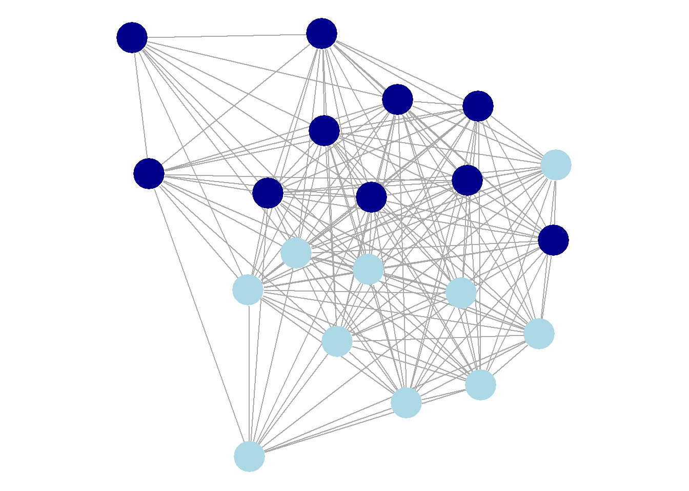

A Simple Algorithm to Build a Network from Bluesky
What is this?
This a description of an algorithm than can build a network of actors on Bluesky (or, in principle, other domains). It is what we currently use to identify the science and research network on Bluesky, which we then analyze to identify influential scientists and more.
Overall idea
Bluesky is one big network with millions of actors (users) connected though billions of follows. The hypothesis is, that we can meaningfully identify subsets of this network that consists of actors that are similar in some sense. Like for example the science and research community that we mainly deal with here, but potentially also actors that share other interests (writing, art, sports, etc.) or some other commonality that connects them.
To illustrate, below is a random network between 20 actors, with a hypothetical sub-network of actors colored dark blue. How do we identify the dark blue actors in our subset, given that we don’t know beforehand if they really are dark or light blue?
Short version
On a high level the algorithm works like this:
First, hand-pick a single (or several) dark blue actor(s). This is basically actors that we assume must belong the to sub-network of interest, if it exists.
Then, get a list of everyone that key actor (or actors) follows. By definition, this must include some of the other dark blue actors in our subset, because connections are what define a network.
Next, we identify prospects, i.e. potential additional network members. We do this by filtering out anyone followed who should not be part of the network. For inclusion, two criteria must be fulfilled:
- Description field: Prospects must contain certain predefined keywords. In the case of the science/research community it could be words like “professor” or “biologist”.
- Number of follows: Prospects must be followed by a certain proportion of the existing network, say, five percent. (In the first iteration everyone is followed by 100%, namely our one key actor, so everyone passes this criteria.)
Successful prospects, i.e. those being followed who also pass the two criteria above, are now added to the network and we start over from from step 2 by fetching lists of everybody they follow.
The process is repeated until either no more new members are found, or we reach a maximum number of iterations (like 30).
The exclusion criteria under step 3. are necessary, because our sub-network also follows actors from outside the network (friends, families, media, celebrities, etc). If we don’t exclude those, the sub-network might not be too meaningful – and we might end up with the whole of Bluesky.
More detail
To get a better feel for how the algorithm works in practice, here’s some output from the first two iterations on an actual run:
Initial network:
Number of actors : 3
Number of follows : 96
Number of connections: 96
Expanding the network, iteration number: 1
Number of prospects meeting the followers threshold of 0.05: 96
Number of valid prospects also matching the provided keywords: 73
Getting follows ■■■■■■■■■■■■■■■■■■■■■■■■■■■■■■■ 100% | ETA: 0s
Number of new actors with followers to add to network: 73
Updated network:
Number of actors : 76
Number of follows : 111714
Number of connections: 133645
Time difference of 5.874215 mins
Expanding the network, iteration number: 2
Number of prospects meeting the followers threshold of 0.05: 2311
Getting profiles ■■■■■■■■■■■■■■■■■■■■■■■■■■■■■■■ 100% | ETA: 0s
Number of valid prospects also matching the provided keywords: 1789
Getting follows ■■■■■■■■■■■■■■■■■■■■■■■■■■■■■■■ 100% | ETA: 0s
Number of new actors with followers to add to network: 1787
Updated network:
Number of actors : 1863
Number of follows : 307288
Number of connections: 1743799
Time difference of 1.163442 hoursLet’s walk through what happens.
First few lines concern the initial, hand-pick network. In this case, it consists of three actors, that we assume must be part of the network of interest. They follow a total of 96 other actors. This initial network consists of 96 connections, so we know that each of the 96 is followed exactly once. In other words, so far there’s no overlap between who our three hand-picked actors follow.
Next chunk of output shows how the network is expanded in the first iteration. Out of the 96 actors being followed, all of them passes the 0.05 threshold (meaning they must be followed by 5 percent). We knew this would be the case, because they are all being followed by one third on the network: One of the three original hand-picked members.
73 of the 96 also matches the keywords we provided, so it looks like most have some affiliation with the network we’re trying to establish. Therefore, 73 new actors are added to the network. (The progress bar is because it can take some time to get all the follows, and it’s nice to know about how far we are.)
First iteration took a bit less than 6 minutes, the output says.
Next, we see that the updated network, now consists of 76 actors (the original 3 plus the added 73). Together, they are following a lot of potential new members: 111,714 in total. This time the number of connections is a bit higher than that, 133,645, so some must be followed by more than one.
Now, next iteration: Of the 111,714 actors 2,311 meet the followers threshold, i.e. being followed by at least 5 percent of the 76 actors now in the network. We need their profiles to examine the descriptions; the progress bar indicates that this can take some time. Turns out 1,789 meet the keyword criteria. This time, slightly fewer, 1,787, are actually added to the network; a few are exclude because they don’t follow any, or because their profiles are private.
Next chunk: The update network is now at 1,863 (76 + 1,787) who follows 307,288 actors altogether, with 1,743,799 connections in total.
It took a while, a bit over an hour, to collect profiles and follows for all those users. At some point the algorithm normally speeds up: This happens when we have found most users that match our criteria, and subsequent iterations find only a few extra.
When the algorithm finally finds no more members (or reaches the maximum number of iterations we allow for) the network is iteratively trimmed down to exclude actors that met the threshold of followers when they where included at an earlier stage, but not longer do.
Further reading
If you want to dig deeper, you can examine the documentation for the R-package I wrote to implement this. Or, even deeper, the code itself on github. (This is also where to file bug reports.)
It is all still in active development, unstable, rough around the edges. So bear with us, and thank you for reading so far.